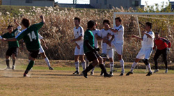

|
Misato, Sunday 9th December,
With all the good graced timing of an unexpected visit from the grim reaper, Sala’s run of form came to an end on Sunday against a well drilled Hibs side.
Sala started as brightly as the fine winter sun that bore down on the Misato pitches and definitely looked most likely to take the lead when Toby latched onto a defensive mistake but could only pull his shot wide of the right hand post after ten or so minutes. A few more half chances came and went for Sala before they were reminded of the counter attacking qualities of the team they were up against.
One quick long pass, followed by a deft touch inside sent a Hib’s player clean through, but Sid did well to turn it past the post. He would repeat the same trick minutes later following a very similar incident, this time as a result of Sala failing to clear their lines.
0 v 0 at the half then and Sala should have read the warning signs a little better because Hibs two chances in the first half were very similar to their goals in the second.
With the wind behind them in the second half, Hibs fairly dominated the play. They had just a little bit more quality in aspects such as controlling the ball and moving off it to make space. Sala struggled for possession of their senses as well as the ball at times, as tempers flared. Not that I’m ever one to whinge about such things… but the usual suspects of-demanding yellow cards for tackles, screaming like a girl at the prospect of physical contact etc. etc. all reared their ugly heads.
Fair play to Hibs on a footballing front though as they tucked in three nice goals spaced sporadically throughout the half and in truth, Sala never really threatened. Bit of a lesson this one, and the bar of quality required in this league has certainly been reaffirmed, if not raised.
Hibs worthy winners, Sala got work to do.
Report by (Getting even more) Lethargio (by the week)
|